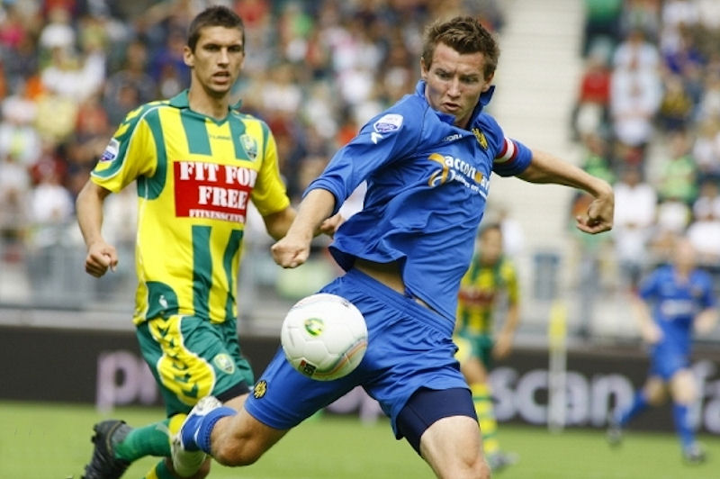
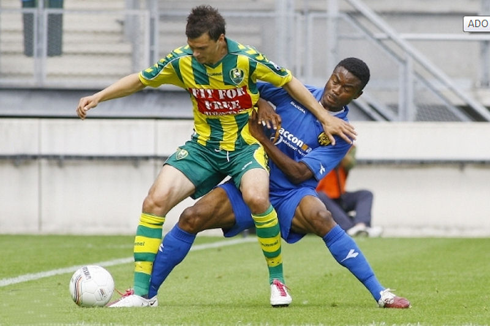
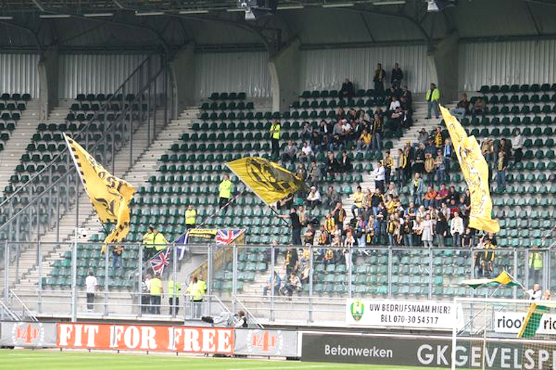

Met effectief countervoetbal heeft Roda JC zondag
in Den Haag ADO met 3-1 verslagen. Veel had de Limburgse ploeg te
danken aan doelman Przemyslaw Tyton, die uitblonk tijdens een zwaar
offensief op zijn doel. ADO ontbeerde stootkracht.
en veelbelovend eerste kwartier kreeg als vervolg een harde strijd vol
irritaties. ADO won de meeste duels en veroverde de ballen, Roda JC
moest overtredingen maken om aanvallen van de thuisploeg te stoppen.
Scheidsrechter Tom van Sichem zag het in en trok nog voor de rust
zes gele kaarten, vier voor Roda, twee voor ADO.
Nadat Frantisek Kubik in de 5e minuut ADO aan de leiding had
geholpen na een pass van de snelle Wesley Verhoek, maakte Mads
Junker in de 9e minuut gelijk uit een strafschop. Die was toegekend
na een overtreding van Christian Kum op hem. Junker viel later uit
toen hij zich verstapte.

Drie minuten na de penalty stond Roda voor na een uitbraak en
afronding door Laurent Delorge, 1-2. Hierna liepen de irritaties
hoog op en werd de sfeer in het veld grimmig. Van Sichem kon de
situatie in de tweede helft beheersbaar houden door met gele kaarten
te blijven strooien. In totaal gaf hij er tien.

ADO joeg verbeten op de gelijkmaker maar strandde bij de afronding
steeds op doelman Tyton. De Pool hield alles tegen, ook een inzet
van dichtbij van Ricky van den Bergh. Dat had de gelijkmaker moeten
zijn in de 67e minuut. Even later was het plotseling 1-3. Met een
zondagsschot van 30 meter trapte verdediger Jimmy Hempte de bal in
de kruising. Voor ADO was dit de tweede nederlaag. De Haagse ploeg
moet de Rus Dimitri Boelikin (huurling van Anderlecht) snel
speelgerechtigd zien te krijgen om stootkracht te ontwikkelen.
